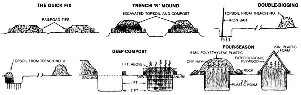

You can get more from your garden now and later (perhaps even during the winter months).
My wife, Sherrie, and I first built raised beds as a rather desperate means of dealing with a garden site that offered only rocky, dead, chemically abused soil. There was little literature on the subject that we knew of, but we did remember reading that the Chinese have been planting in loosened mounds of earth for 40 cen turies.
Much to our surprise and excitement, the beds of composted clay soil that we prepared and planted that spring soon produced an abundance of healthy and delicious vegeta bles. Visitors ran for their cameras as soon as they saw our attractive jungle. We won dered how we could have gardened for years without discovering that with a bit of effort we could have doubled, tripled, and quadrupled our yields while halving, thirding, and quartering our garden work.
We saw, too, that we no longer needed to buy or hire a plow, or drag a cultivator, a tiller, or even a common hoe. To dig in raised beds, we needed only four tools: a fork, a rake, a shovel, and a hand trowel-all inexpensive.
If you're not ready to commit yourself to raised-bed gardening without some evidence that it works, try the following experiment: Mark out one or two plots in your garden (make them about 4' X 8' or 4' X 12') and- using a four-tined garden fork or an iron bar - loosen the soil as deeply as you can drive in the tool. Once that is done, don't step on the loosened soil, or you'll undo some of the good that your hard work accomplished - namely, aerating the soil to overcome the heavy compactness that discourages plant growth. The loosened soil's increased capacity to hold oxygen and water should result in plants that are noticeably bigger, healthier, and more productive.
The worked beds will likely be a few inches higher than the surrounding compacted soil, but they may not be high enough to warrant borders of planks or logs. Then again, you might want to outline them anyway, if only to remind yourself to avoid stepping inside the beds.
Mulch these areas with compost, to add more nutrients and a bit more height. Then go ahead and plant intensively. . . that is, sow the seeds just far enough apart so that when the plants are adult size, their leaves will just barely touch those of their neighbors. This will provide a shade mulch that helps to keep down weeds.
We developed a shortcut route to raisedbed gardening when moving our homestead to new acreage one May. What with all the work of transferring our belongings, there wasn't time to spare for digging beds before planting. So we brought a couple of dumptruck loads of compost from our former home's huge pile and unloaded them at the new garden's location. Then we shoveled and raked the material into 24'-long mounds, lined them with old railroad ties to keep the loam in place, and planted.
The new beds didn't have the depth of compost - and therefore the level of production - that our former plot had enjoyed, but the method did allow us to harvest yields larger and heavier than the conventionally grown gardens around us. When we have the time, we'll dig down and fill the bed with compost and organic materials as described later in this article, but the shortcut method has proven to be an effective way to get going on raised beds without a whole lot of work, and to quickly produce a more attractive, more productive, and more easily cared for garden. (Even when using the quick fix method, it's a good idea to loosen the soil in the area where the bed is going to be built. As noted above, you can do this easily by pushing or driving an iron bar or four-tine fork into the top 10 or 12 inches of the soil and breaking it up.)
We learned a couple of lessons while preparing this (almost) instant garden, too. The first dump-truck load was simply dropped at the approximate site of the bed-to-be; we then had to shovel the soil into its proper place. That taught us two things: [1] to position the railroad ties (or build the bed frame of treated lumber) before bringing in the topsoil, and [2] to take care that the truck puts the earth where we want it in the first place, thus minimizing the heavy handwork.
If your garden is in a well-drained location, beds can be created by digging the topsoil out of the pathway areas - say, to a depth of six to ten inches - and adding it to the planting areas. [EDITOR'S NOTE: This technique works very well in freshly rototilled plots.] This will double the depth of topsoil available to plant in, making good use of what otherwise would only be trod upon.
As I noted before, we like to use railroad ties to keep the soil from falling into the trenches. Be sure to use old ones, though, since the newly creosoted timbers can be toxic to plants and people. Used ties are free around here (when we can find them) and are heavy enough to hold the beds in place without being staked. Be sure not to undermine them when digging the path-trenches, however, or your wooden borders will fall into the dugout area. And, once again, if you loosen the soil within the bed with a fork or iron bar before digging the paths, the plants' roots will have easier access to the needed nutrients.
Finished compost can be mixed with the extra soil, if available. If not, you can simply sheet-compost by adding organic materials such as grass clippings, kitchen garbage, wood ashes, sawdust, leaves, and rotted manure to the bed areas before covering them with the new earth. We're careful to hand-pick all rocks out of the bed so the plants' roots won't have those obstacles to deal with, and to remove any roots - especially grass roots - that are likely to continue growing and choke our crops. We find that every bit of care taken in preparing raised-bed soil pays off very handsomely. Once your soil is in good shape, you'll have eliminated a great many of the problems usually associated with gardening.
For this method, mark out a rectangle - in a convenient spot in your row garden - that's 3' to 4' wide and 6' to 12' long. Now dig a 1' -deep trench across one end of this space and wheelbarrow the soil to the other end of the planned bed. (You'll later use this to fill the last trench you dig.) Now, again with an iron bar or four-tined fork, loosen the soil in the bottom of the trench as deeply as possible.
With that done, fill the pit with kitchen garbage, moldy hay, leaves, grass clippings, manure, or anything else compostable. Then dig an adjacent trench to the same depth, mounding the removed topsoil on the organic material in the first trench. When you finish digging the second trench, plunge the iron bar or fork along the bottom to break up the subsoil.
Again, fill the second trench with organic material, dig another trench, and place the topsoil over the to-be-composted matter. Continue this process until the bed is completed. Cover the last compost-filled trench with the extra soil from the wheelbarrow, then line the bed with boards, rocks, or logs, or simply leave it mounded.
When we learned that a tomato plant's roots will reach five feet into the earth if not blocked by hardpan, that lettuce roots can plunge as deep as eight feet, and that beet roots may descend to ten feet, we decided to dig our beds two feet deep, at least, and then pile the mound at least one foot above ground. That gives the roots a minimum of three feet in which they can easily reach the nutrients necessary to build healthy plants. It happens we had a backhoe on hand to do the digging with the first year. But knowing what we know now, we'd hire one if we had to. It's well worth the expense, considering the better food, the reduction in pest and disease problems, and the enormous yields that result from the extra-deep beds.
After the beds are dug, we fill each 24'-long, 3'-wide plot with organic matter and allow it to slowly decompose over the months and years. Once filled, the beds are raked to prepare a seedbed. The mounds shouldn't be crowned (rounded over), as that can cause water runoff and erosion. Instead, flatten the top to hold the rainwater, smooth the surface carefully, and put in the seeds and seedlings.
Here - in detail - is how we fill the deepcompost trenches: On the bottom of the excavation we place approximately 6 inches of unshredded brush and prunings, which will trap air for the plants' roots for years to come. Covering that is half a foot (at least) of old hay and weeds that we've gathered and piled up for just this purpose. It doesn't matter if the material is dry or green, since it's being buried so deeply. Then a 6-inch layer of subsoil (all rocks removed) is added, to make sure all the trace elements are included, followed by 3 or more inches of manure. (We find it's OK to use the material fresh at this depth.) After every layer is applied, by the way, we add a sprinkling of rich topsoil and manure to help trigger bacterial action.
Next comes a 3-inch layer of a mixture of whatever we have an abundance of: leaves, kitchen garbage, grass clippings, wood ashes, pine needles, sawdust, or just about anything organic. With this step completed, the bed is filled to ground level.
Then a 6-inch cover of wet, spoiled hay is applied, topped by a 3-inch layer of wellcooked compost and, finally, 3 inches of good topsoil to cover it all. The finished bed is ready to rake level on top and plant.
For six years now we've gardened right through the winter by covering our deepcompost beds with a foot of hay and a sheet of plastic (as reported in MOTHER N0. 73, page 66). Normally, the added insulation that snow provides keeps frost from reaching the plants' roots during the December-to-March cold season here in upstate New York (USDA Zone 5). This past winter's unusual condi tions upped the ante for local year-round gardeners, however. Usually there's pretty constant snow cover, and the temperature dips below zero only rarely. However, last year the ground was often bare, and the thermometer hovered between 20° and -20°F day and night for much of December, freezing our 3-foot-deep water line on Christmas Day. While the garden beds (carrots, beets, turnips, cole crops, chard, spinach, etc.) were protected on top with a foot of hay, the frost froze the moist earth in the wide paths between the beds, attacking the roots from below.
We plan to avoid a recurrence of that problem by lining our new beds with plastic-foam insulation before filling them with the compost materials. Insulation that's two inches thick will provide sufficient protection, we think, even in USDA Zones 5 or above, if it extends at least two feet deep. If the temperature stays near zero for several days with bare-ground conditions, we'll also pile hay in the paths to hold back the frost.
The insulation could be used to cover the top of the beds, and may be no more expensive than hay or plastic in some areas where the former costs $8.00 or more per bale. The bed caps shown in the illustration are designed for short crops only. We'll continue using dry hay and plastic for members of the cabbage family.
I'm confident that anyone with a few square feet of garden space, no matter how poor the soil, can raise more than $2.00 worth of food on each of those square feet each year if they prepare raised beds similar to those described here. In fact, conventional gardeners would be well-advised to reduce their garden area when converting to the deep-compost method, unless they plan to feed the neighbors or start a roadside stand!
EDITOR'S NOTE: An earlier version of this article appeared in Homesteaders News. Subscriptions to that publication are available for $10 (6 issues) from Norm and Sherrie Lee, Box 517, Naples, NY 14512.
For a review of our own gardeners' experiences with raised-bed gardening, see page 56.
|
 |
|
|